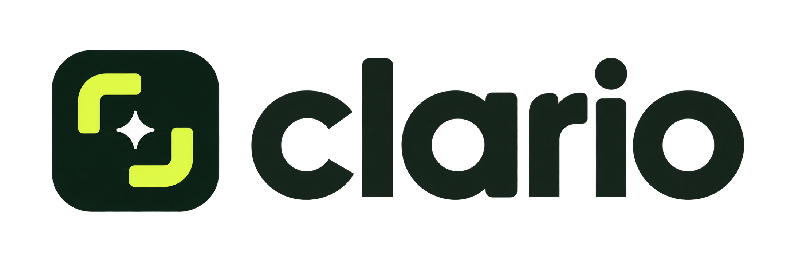

Capture your screen, drop in an image, or paste with Ctrl+V.Highlight what matters. Save it in seconds.
Clear context, ready to go.Save a project to keep editable annotations.
Downloads use your browser’s recording format. Video trimming and GIF conversion are not included yet.
Stored on this device only. Export files for a reliable backup.
Ctrl+Z undo · Ctrl+Y redo · Delete removes selection · Esc unselects · V select · H highlight · R rectangle · O ellipse · A arrow · D pen · T text · C crop
Blur is a visual effect. Use opaque Redact and export a flattened image to hide sensitive information. Editable projects retain the original image.
Screen capture and recording require a supported desktop browser and permission. Global hotkeys, scrolling capture, OCR, cloud links, and native installers are not included in this browser edition.